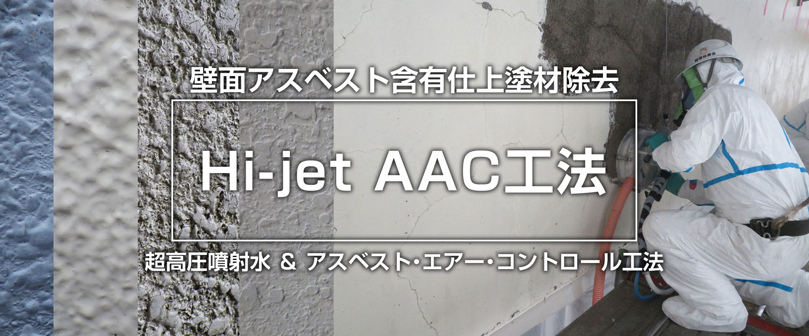
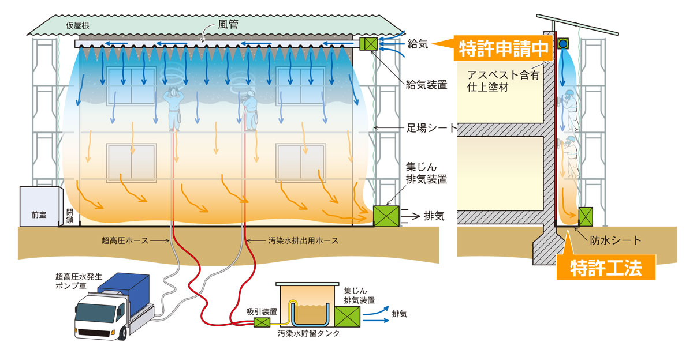
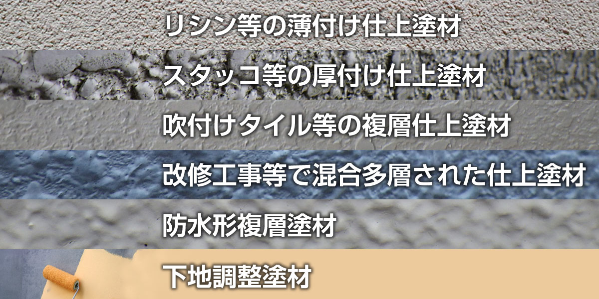

壁面アスベスト含有仕上塗材除去
Hi-jet AAC工法
Hi-jet AAC工法とは?
Hi-jet AAC method

Hi-jet AACとは「超高圧噴水＆アスベスト・エアー・コントロール」の略で、
弊社が長年携わってきたアスベスト除去の技術を使い開発しました。
アスベスト粉塵の流出を極限までカットしつつ、
作業員の健康・安全面もクリアした新工法です。
「国立研究開発法人 建築研究所」「NSK日本建築仕上材工業会」が発表した
処理工法区分【Ⅱ】を満たしています。

Hi-jet AAC工法 6つの特徴
Six features of the Hi-jet AAC method
①アスベスト粉塵の飛散を極限までカット
100MPa以上の超高圧水を用いた切削洗浄除去処理
②飛散防止
作業区域の隔離密封養生は行わず、最低限の作業区域頂部と両端側部の遮へいならびに水粉等の飛散養生は実施する。
③汚染水流出防止
除去装置等から流れ落ちるアスベスト汚染水の、土壌などへの流出は防水シートで防ぐ。
防水シートは、作業区域最下床面に敷設する。
（特許取得済：5879424)
④作業区域換気
除去作業区域には、集じん排気装置ならびに給気装置などを設置稼動（特許申請済）
切削洗浄装置などから時折噴出発生する水粉にまぎれた粉じんの処理、作業区域の水粉などの視界確保、気流が発生し換気されることによる防暑対策。
⑤ 汚染水処理
切削洗浄汚泥水は、バキューム吸引により移送貯留。貯留した汚泥水は適正にろ過などの処理をし、下水道などへ放流（※HEPAフィルター同等以上）
⑥客観的データ等を元にした工法
作業環境測定をはじめとする、現場粉じん等データ、作業区域気流や温度測定データ、排水処理水分析データ、作業員からの意見徴収
